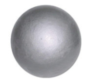

The equipment used in the shot put event includes the shot, spike, recording sheet, towel, broom, flags (white and red), stopwatch, tape measure, and stop board.
Shot
The shot is a heavy spherical object used in the shot put event, Figure 2.8. The object is made of metal such as iron or brass and varies in weight depending on the competition category. While men’s shots are as heavy as 7.26 kg, women’s shots are 4 kg. Notwithstanding, youth and junior weight categories are lighter depending on the age group.

Fundamental skills for shot put
The main objective of putting the shot is to propel the it as far as possible. Achieving this requires the thrower to possess essential skills for throwing the shot over long distances. These fundamental skills include gripping the shot, shot placement, and putting the shot.
Gripping
This is the action of holding the shot. It involves holding with fingers. To grip the shot properly, follow these steps: